NARRATIVE DESIGN
• Cours 1
• Introduction
Antonin Atger
Qui suis-je ?

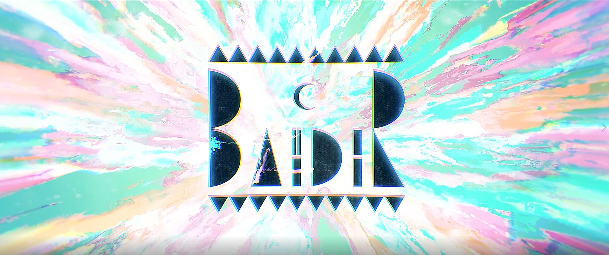
Narrative Design
Provient des jeux vidéos
Narrative Design
• Provient des jeux vidéos
• Désigne le travail fait pour offrir la meilleure interaction entre le public et l’histoire.
– Compréhension.
– Sensations.
– Emotions.
Narrative Design
Début
Milieu
Fin
Narrative Design
Début
Milieu
Fin
Flashforward
Début
Flashback
Milieu
Fin
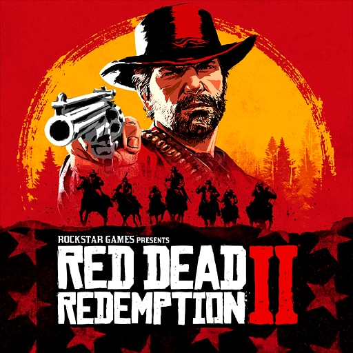
Suite à un braquage qui a mal tourné dans la ville de Blackwater, Arthur Morgan et le reste des hors-la-loi de la bande de Dutch van der Linde doivent prendre la fuite vers l'est. Les agents fédéraux et les meilleurs chasseurs de primes du pays se mettent à leurs trousses et la bande commet méfaits sur méfaits dans les vastes terres sauvages de l'Amérique dans un seul et unique but : survivre. Alors que des querelles internes menacent de faire voler la bande en éclats, Arthur est tiraillé entre ses propres idéaux et sa loyauté envers la bande qui l'a élevé.
• Importance du regard extérieur dans la création artistique : nous créons pour nous mais aussi pour les autres (et dans le cadre de la communication : surtout pour les autres).
• Cela s’applique à toutes les œuvres d’art, pas uniquement aux jeux vidéos !
Exemple
Je rêve que je volais.
Exemple
• Je rêve que je volais.
• Je vole de Lyon à Paris puis je file en Angleterre et enfin je reviens sur Lyon. Je suis content, j’ai toujours rêvé de voler.
Exemple
• Je rêve que je volais.
• Je vole de Lyon à Paris puis je file en Angleterre et enfin je reviens sur Lyon. Je suis content, j’ai toujours rêvé de voler.
• Le vent file entre mes doigts, ébouriffe mes cheveux. La ville minuscule sous moi scintille. Je reconnais la tour en stylo bille et pousse un cri de joie, que je suis le seul à entendre dans l’infinité de l’espace…
Exercice :
Trouvez un de vos rêves les plus fous, décrivez le, non pas comme vous le voulez, non pas pour être précis, mais pour que l’autre ressente ce que vous avez ressentis !
NARRATIVE DESIGN
• Cours 2
• Les cycles de personnages
Antonin Atger
Comment on construit une histoire ?
Comment on construit une histoire ?
Intrigue : Succession d’évènements au sein de l’histoire.
Le cycle du héros
Structure de base de nombreux films.
Héros est chez lui
Le cycle du héros
Le héros tranquille chez lui :


Héros est chez lui
Un messager arrive, et l’invite à l’aventure et la recherche d’un objet d’un but / l’elixir.
Le héros refuse
Le cycle du héros
• Le messager arrive/appel de l’aventure/
• refus du héros :


Le héros part à l’aventure :


Héros est chez lui
Un messager arrive, et l’invite à l’aventure et la recherche d’un objet d’un but / l’elixir.
Le héros refuse
Finalement, le héros accepte !
Péripéties
Le messager /mentor meurt
Le cycle du héros
Le messager / mentor meurt :


??
Héros est chez lui
Un messager arrive, et l’invite à l’aventure et la recherche d’un objet d’un but / l’élixir.
Le héros refuse
Finalement, le héros accepte !
Péripéties
Le messager /mentor meurt
Le héros manque de mourir/abandonne tout/tout semble perdu
Le héros accepte son rôle d’élu
Le cycle du héros
Le héros manque de mourir :


Héros est chez lui
Un messager arrive, et l’invite à l’aventure et la recherche d’un objet d’un but / l’élixir.
Le héros refuse
Finalement, le héros accepte !
Péripéties
Le messager /mentor meurt
Le héros manque de mourir/abandonne tout/tout semble perdu
Le héros accepte son rôle d’élu, s’en sort (ressucite) et détruit la menace / récupère l’objet convoité
Le héros rentre chez lui. L’environnement est le même mais lui a changé.
Le cycle du héros
Le héros détruit la menace/gagne :


Retour dans l’univers normal, transformé :


Exercice
Trouvez trois histoires que vous connaissez qui utilisent le cycle du héros.
Comment faire lorsque le héros ne doit PAS évoluer ?
Arc de l’apprentissage.
Notre héros veut
quelque chose
Recherche
Trouve
ce qu’il veut !
Ce rend compte que
ce n’est pas ce qu’il veut
vraiment.
Réalise ce dont
il a vraiment besoin
Retour
à la normale
Arc de la compréhension de soi
Arc de l’apprentissage.
Notre héros veut
quelque chose
Recherche
Trouve facilement
cette chose !
En abuse
Ce l’éloigne
de ce qui est essentiel
pour lui
Le héros fait son mea culpa /
Se recentre sur l’essentiel
Retour
à la normale
Arc de l’humilité
Notre héros veut
quelque chose
Recherche
Trouve
ce qu’il veut !
Ce rend compte que
ce n’est pas ce qu’il veut
vraiment.
Réalise ce dont
il a vraiment besoin
Retour
à la normale
Arc de la compréhension de soi
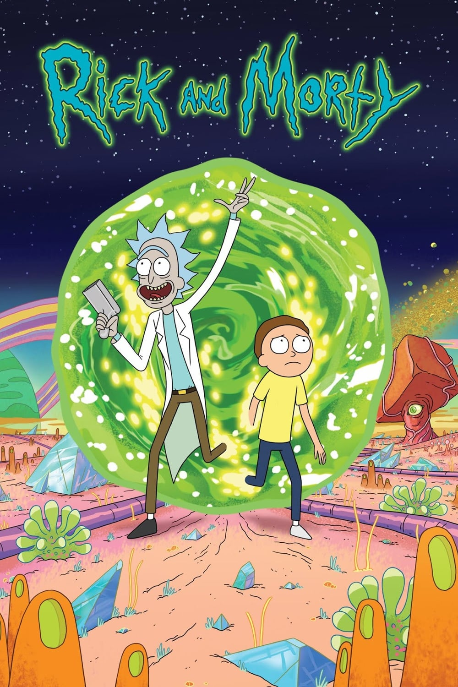
Exercice
Trouvez trois histoires qui utilisent l’arc de l’apprentissage.
Arc de rédemption
Le héros a fait
quelque chose de mal
Il prend conscience
de ses erreurs passées
Il est pris de remords
Il tente de racheter ses erreurs passées
Il en paye le prix
Il obtient
sa rédemption
Exercice
Trouver une histoire qui utilise l’arc de la rédemption.
Exercice final !
Reprenez votre rêve initial, et tentez de créer avec une histoire qui utilise soit le cycle du héros, soit l’arc de la rédemption, soit l’arc de l’apprentissage !
Bonus : qu’est-ce que sont les tropes ?
NARRATIVE DESIGN
• Cours 3
• Storytelling et symbolisme
• Qu’est-ce qu’un héros ?
• Le storytelling en narration
• Les symboles.
Qu’est-ce qu’un héros ?
Qu’est-ce qu’un héros ?
• 1. Demi-dieu ; homme célèbre divinisé (dans l'Antiquité).
• Les héros de la mythologie grecque, romaine.
• 2. Celui qui se distingue par ses exploits ou un courage extraordinaire (dans le domaine des armes).
• « Mourir en héros. »
De base, le héros possède des qualités qui lui sont inhérentes et qui le qualifient en tant que héros.
Héros =/= protagoniste.
Définition du héros
• Grèce Antique
– Grèce antique : les héros ont des qualités inhérentes, qui sont associées à l’héroïsme.
– Hercule : force
– Achille : invulnérable.
– Ulysse : malin.
– Les héros sont essentialisés.


Evolution du héros
• A l’époque médiévale, le héros évolue : il devient plus humain.
• Ses forces premières sont : courage et fidélité.


Le héros moderne


On ne nait plus héros, on le devient (cycle du héros).

Soit on avait les qualités pour être un héros mais pas les capacités :
Soit on avait les capacités pour être un héros mais pas les qualités :

Question :
• Pourquoi est-ce que la notion de héros a évolué avec le temps ?
• Pourquoi est-ce que désormais on ne nait plus héros mais on le devient, alors qu’auparavant les héros l’étaient dès la naissance ?
Question !
• Le personnage principal est-il forcément un héros ?
• Avez-vous des exemples de personnages principaux qui ne sont pas des héros ?
Anti-héros !
Le storytelling des personnages
L’underdog
L’underdog
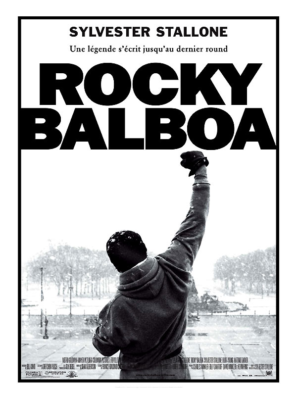
L’underdog
L’underdog
Qu’est-ce que l’underdog ?
• Underdog est un mot anglais désignant un participant à une compétition ou à un combat qu'on ne s'attend pas à voir gagner. C'est un synonyme d'« outsider ».
• Nous pouvons définir deux sous genres de l’« underdog » :
– La personne qui part à l’aventure avec des désavantages (naissance dans le mauvais milieu social, handicap, personne sans compétence particulière.
– La personne qui s’oppose au « système », « seule contre tous », et qui donc devra lutter en permanence pour réussir.
Exemple en storytelling :
C’est Marseille contre Paris !
C’est moi contre les savants corrompus.
Question !
Trouvez un exemple de personnalité ou des boites qui utilisent cet argument de l’underdog (désavantage de base / seul contre les puissants) pour créer son storytelling.
Everyman
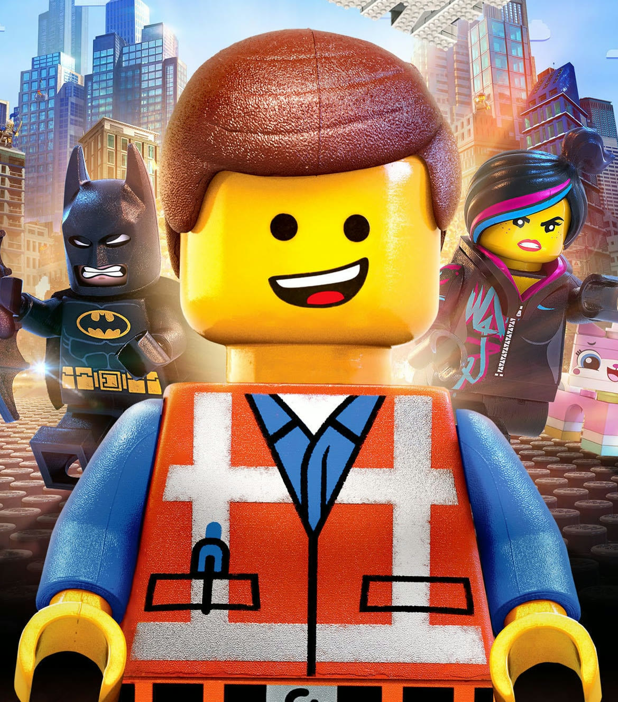
Everyman
Définition
• Everyman : une personne particulièrement ordinaire, avec des experiences simiaires au commun des mortels.
• Il peut s’agir :
– Soit d’une personne par essence normale.
– Soit d’une personne qui a SU rester simple malgré des circonstances extraordinaires.
– Soit une personne qui reste fidèle à ses “origines modestes” (réelles ou fantasmées). La phrase Classique : “je n’oublie pas d’où je viens”.
L’Everyman en politique
« J’ai su rester simple »
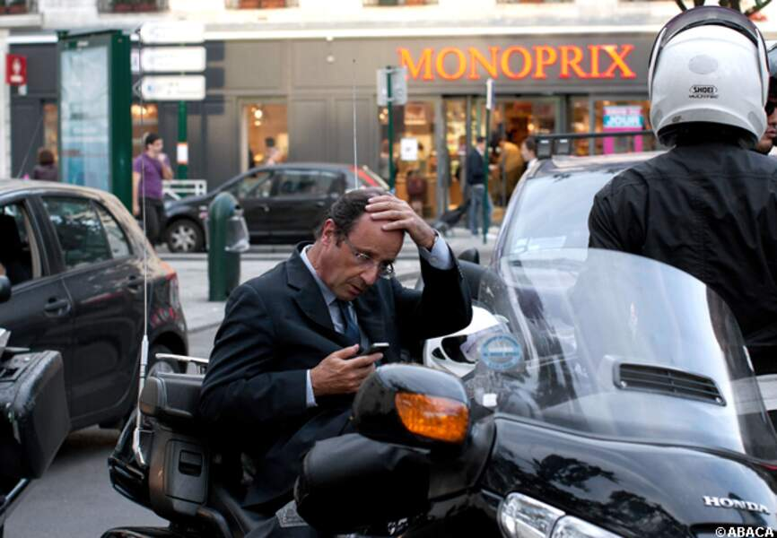
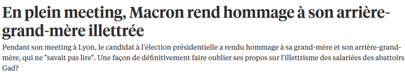
« Je n’oublie pas d’où je viens »
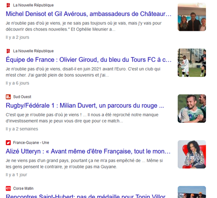
« Je n’oublie pas d’où je viens »
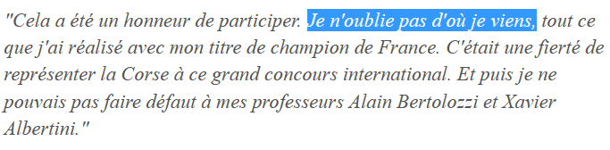
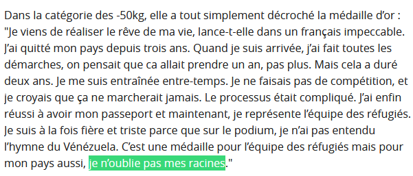
Comment fonctionne le storytelling « je n’oublie pas d’où je viens ? »
• 1) Avoir des origines modestes OU se créer des origines modestes.
• 2) En cas de succès, rappeler ces origines modestes.
• 3) Justifier une action qui paraît étrange dans le présent avec ces origines modestes.
• 4) En cas d’accusation de perdre contact avec la réalité, rappeler qu’on « n’oublie pas d’où l’on vient ».
Question !
Pourquoi est-ce que ça marche ?
Question !
• Pourquoi est-ce que ça marche ?
– Vecteur de valeurs qui plaisent : humilité…
Question !
Trouvez une personnalité OU une boîte qui utilise le storytelling « je n’oublie pas d’où je viens. »
Storytelling
Combinaison de « j’ai gagné contre le sort » (Underdog), « je suis comme tout le monde » (Everyman)
Storytelling
• Combinaison de « j’ai gagné contre le sort » (Underdog), « je suis comme tout le monde » (Everyman)
• « Je suis partis de rien. »
Je suis partis de rien
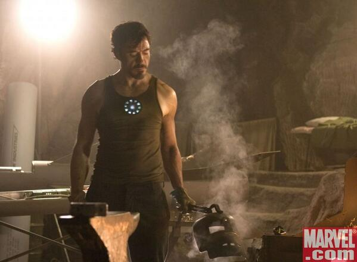
Question : pourquoi ça marche ?
Question : pourquoi ça marche ?
• Réponse : légitimité. Le succès est ainsi mérité.
• Méritocratie.
• Est-ce que cela vous fait penser au storytelling d’un pays ?
Exemple de storytelling
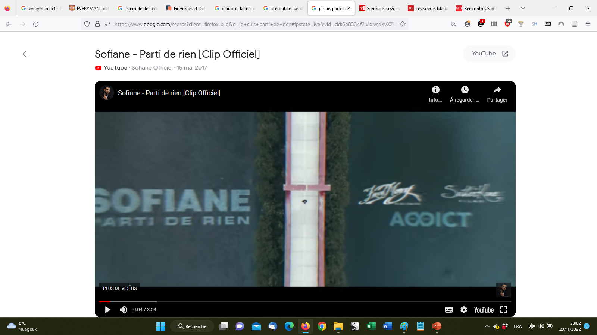
Exemples réels
« Retour au naturel »
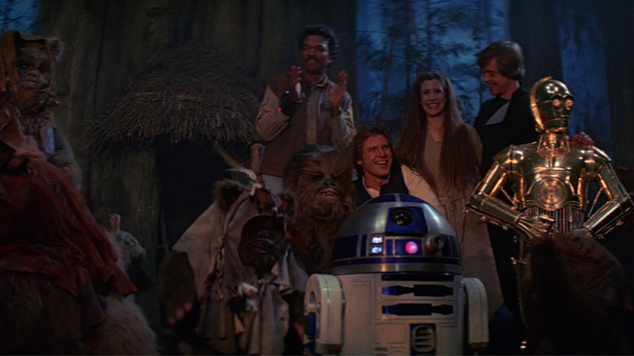
« Retour au naturel »
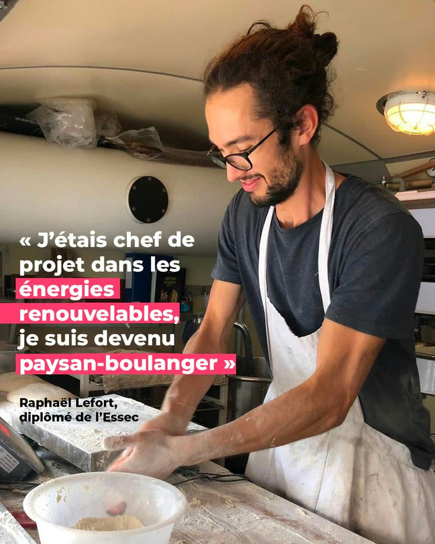
« Retour au naturel »
Storytelling : L’arc de rédemption
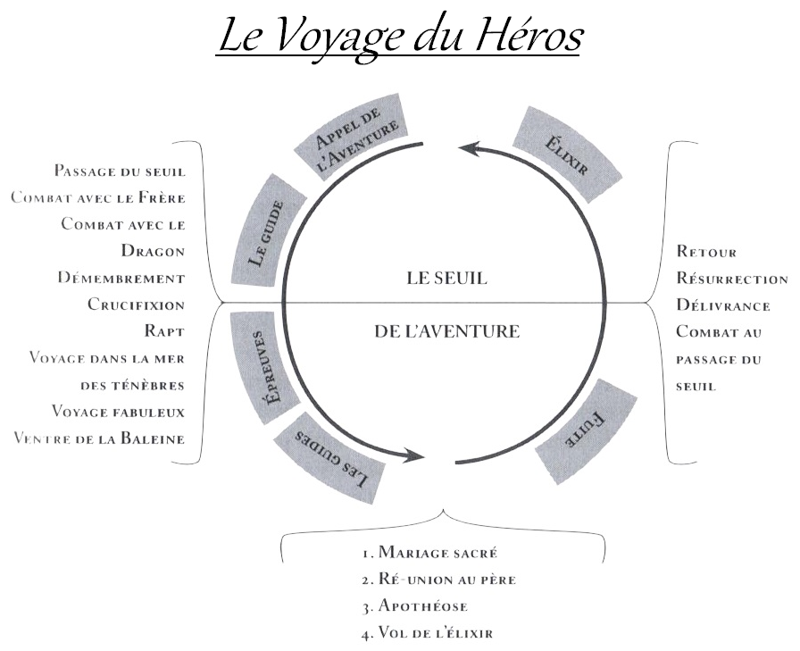
Version réelle
Thierry Casasnovas.
A vous !
• Trouvez des exemples réels de personnes qui utilisent le storytelling suivant :
– Le petit contre le grand.
– Monsieur tout le monde parti de rien.
– Le retour à la simplicité.
– La rédemption
NARRATIVE DESIGN
• Cours 4
• Le poids des symboles
Le poids des stéréotypes
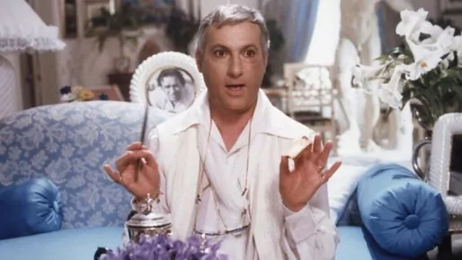
Définition
Stéréotype : Caractérisation symbolique et schématique d'un groupe qui s'appuie sur des attentes et des jugements de routine. (Larousse).
Les scientifiques sont tous un peu fous et extravagants.
Les jeunes de banlieues sont dangereux.
Les gays sont efféminés et maniérés
Le poids de symboles
Détourner les stéréotypes
Est-ce que ces éléments symbolisent la virilité masculine pour vous ?
• Talons hauts
• Perruques
• Maquillages ?
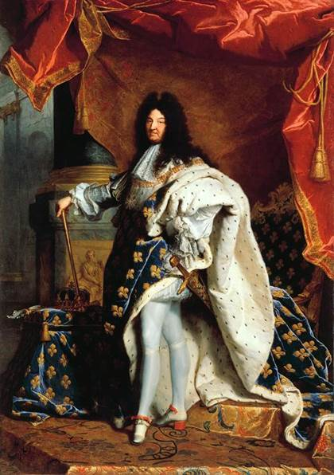
Comment détourner le sens d’un symbole ou d’un archétype ?
Trouvez un objet symboliquement fort, et détournez le !
• 1) Prendre conscience du poids symbolique d’un objet ou d’une situation.
• 2) Acter que le spectateur AURA conscience de cette connotation.
• 3) Présenter une première situation qui donne l’impression que l’usage de l’objet sera cliché.
• 4) Tromper le spectateur par une révélation qui travestit le sens premier de l’objet.
A vous !
• Trouvez un objet / une situation associée à des éléments clichés.
• Trouvez une manière de détourner l’objet.
• Créez une pub qui permet de travestir le sens de cet objet.
NARRATIVE DESIGN
• Cours 5
• L’art de transmettre un message
Comment faire passer un message ?
• Définition : information que transmet le créateur auprès du public à travers l’histoire.
• Il peut être de nature :
– Philosophique
– Politique
– Morale
– Emotionnelle…
Comment faire passer un message ?
• Il peut être :
– Volontaire.
– Involontaire.
– Une surinterprétation du spectateur.
• Il peut être :
– Explicite
– (Le plus souvent) Implicite.
Message volontaire
Message volontaire
Un message « volontaire » est un message que le créateur souhaitait activement transmettre au sein de son œuvre.
Message volontaire
• Un message « volontaire » est un message que le créateur souhaitait activement transmettre au sein de son œuvre.
• TOUS les films n’ont pas de messages explicites et volontaires.
Message volontaire
• Un message « volontaire » est un message que le créateur souhaitait activement transmettre au sein de son œuvre.
• TOUS les films n’ont pas de messages explicites et volontaires.
• Ce n’est pas parce que le public ne voit pas le message que le message n’existe pas.
Message volontaire
• Un message « volontaire » est un message que le créateur souhaitait activement transmettre au sein de son œuvre.
• TOUS les films n’ont pas de messages explicites et volontaires.
• Ce n’est pas parce que le public ne voit pas le message que le message n’existe pas.
• (MAIS on peut voir des messages n’importe où !)
Involontaire
Involontaire
Un message involontaire est un message que ne souhaitait pas transmettre l’auteur mais qui est perçu comme tel par une quantité non négligeable de personnes.
Involontaire
• Un message involontaire est un message que ne souhaitait pas transmettre l’auteur mais qui est perçu comme tel par une quantité non négligeable de personnes.
• Ce message peut être positif ou négatif.
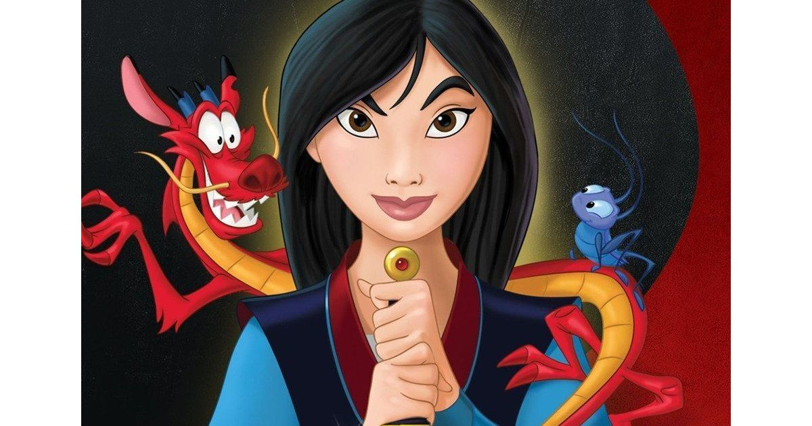
Involontaire
• Un message involontaire est un message que ne souhaitait pas transmettre l’auteur mais qui est perçu comme tel par une quantité non négligeable de personnes.
• Ce message peut être positif ou négatif.
• La perception de ce message involontaire est généralement due soit à une maladresse de l’auteur soit à un contexte de lecture de l’œuvre différente de celui de sa création.
Involontaire
• Un message involontaire est un message que ne souhaitait pas transmettre l’auteur mais qui est perçu comme tel par une quantité non négligeable de personnes.
• Ce message peut être positif ou négatif.
• La perception de ce message involontaire est généralement du soit à une maladresse de l’auteur soit à un contexte de lecture de l’œuvre différente de celui de sa création.
– Soit le public concerné n’est pas le même que les créateurs de l’œuvre (un public féminin critique une œuvre créé par des hommes).
Involontaire
• Un message involontaire est un message que ne souhaitait pas transmettre l’auteur mais qui est perçu comme tel par une quantité non négligeable de personnes.
• Ce message peut être positif ou négatif.
• La perception de ce message involontaire est généralement du soit à une maladresse de l’auteur soit à un contexte de lecture de l’œuvre différente de celui de sa création.
– Soit le public concerné n’est pas le même que les créateurs de l’œuvre (un public féminin critique une œuvre créé par des hommes).
– Soit l’époque a changé (des clichés qui ne sont plus acceptés de nos jours).
Involontaire
• Un message involontaire est un message que ne souhaitait pas transmettre l’auteur mais qui est perçu comme tel par une quantité non négligeable de personnes.
• Ce message peut être positif ou négatif.
• La perception de ce message involontaire est généralement du soit à une maladresse de l’auteur soit à un contexte de lecture de l’œuvre différente de celui de sa création.
– Soit le public concerné n’est pas le même que les créateurs de l’œuvre (un public féminin critique une œuvre créée par des hommes).
• Soit l’époque a changé (des clichés qui ne sont plus acceptés de nos jours).
– Soit les lieux sont différents (une vision caricaturale d’un pays lointain est critiqué quand le pays lointain voit le film)
• L’interprétation de ce message est extrêmement dépendante de l’actualité ET de la grille de lectures du public.
Message volontaire de la part de James Cameron
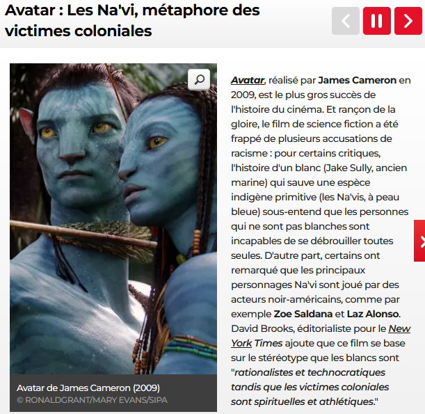
Message involontaire de la part de James Cameron
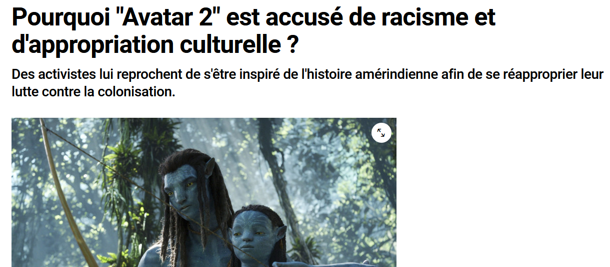
Surinterprétation
Interprétation basée sur des éléments peu pertinents, avant tout due à une envie de croire du lecteur.
Surinterprétation
• Interprétation basée sur des éléments peu pertinents, avant tout due à une envie de croire du lecteur.
• La frontière entre message involontaire et surinterprétation est mince, et généralement sujette de débats : on reproche souvent aux personnes de « surinterpréter » une œuvre.
Surinterprétation
• Interprétation basée sur des éléments peu pertinents, avant tout due à une envie de croire du lecteur.
• La frontière entre message involontaire et surinterprétation est mince, et généralement sujette de débats : on reproche souvent aux personnes de « surinterpréter » une œuvre.
• La légitimité de l’interprétation et de la surinterprétation est certes factuelle (mise en avant de certains éléments) mais aussi sociale et politique.
Qu’est-ce qu’une norme
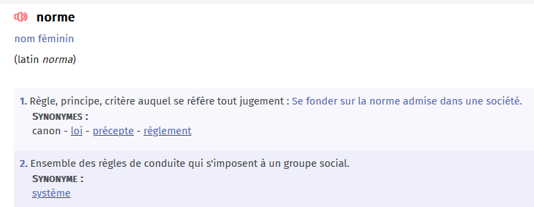
Source : https://www.larousse.fr/dictionnaires/francais/norme/55009
Qu’est-ce qu’une norme ?
Importance de la « norme » dans la fiction
Ces normes évoluent au cours du temps. Ce qui était « normal » avant peut être considéré comme « anormal » maintenant.
Importance de la « norme » dans la fiction
• Ces normes évoluent au cours du temps. Ce qui était « normal » avant peut être considéré comme « anormal » maintenant.
• Les normes dépendent des groupes sociaux : ce qui est « normal » pour un groupe social sera différent pour un autre groupe.
• La notion de normes est intéressante pour comprendre l’intentionnalité d’un message.
Importance de la « norme » dans la fiction
• Ces normes évoluent au cours du temps. Ce qui était « normal » avant peut être considéré comme « anormal » maintenant.
• Les normes dépendent des groupes sociaux : ce qui est « normal » pour un groupe social sera différent pour un autre groupe.
• La notion de normes est intéressante pour comprendre l’intentionnalité d’un message.
• Par exemple : faire une histoire dans les années 80 où les 10 héros sont tous des hommes blancs hétéros était le postulat par défaut (et donc pas forcément un choix motivé du créateur).
• Faire aujourd’hui un tel choix pourrait être perçu comme un choix motivé de n’inclure aucune minorité.
Importance de la « norme » dans la fiction
• Certaines normes sont installées « par défaut » dans l’histoire.
• Elles sont une facilité scénaristique et une grille d’interprétation aisée pour le public. Mais elles véhicules aussi des messages.
• Par exemple :
Importance de la « norme » dans la fiction
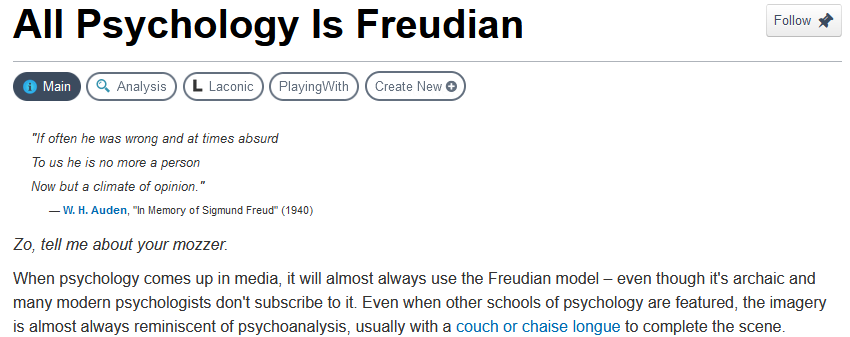
Source : https://tvtropes.org/pmwiki/pmwiki.php/Main/AllPsychologyIsFreudian
En effet, le cliché du psy psychanalytique et du patient sur le divan n’est plus la norme depuis longtemps dans le domaine des thérapies. Mais il est encore très présent dans les fictions, et induit une certaine idée de ce que doit être une thérapie.
• Avez-vous d’autres exemples de « trope » (représentation, scène clichée présentes par défaut dans les fictions) ?
• Trope : « Un « trope » au sens du site, peut être traduit par « figure narrative », « récurrence scénaristique » ou « artifice de fiction ». Le site se définit comme « un catalogue des ficelles du métier sur l'écriture de fictions ». (source : https://fr.wikipedia.org/wiki/TV_Tropes).
Comme utiliser « la norme » dans votre création ?
Si vous voulez créer, il faut prendre conscience des normes actuelles (quitte à les suivre ou non).
Comme utiliser « la norme » dans votre création ?
• Si vous voulez créer, il faut prendre conscience des normes actuelles (quitte à les suivre ou non).
• Il faut avoir conscience des normes que partagent le groupe social que vous suivez (quitte à le confronter avec vos propres normes à vous).
Comme utiliser « la norme » dans votre création ?
• Si vous voulez créer, il faut prendre conscience des normes actuelles (quitte à les suivre ou non).
• Il faut avoir conscience des normes que partagent le groupe social que vous suivez (quitte à le confronter avec vos propres normes à vous).
• Il faut prendre conscience de comment sera perçue votre histoire et les messages, implicites et explicites, qu’elle véhicule.
Comme utiliser « la norme » dans votre création ?
• Si vous voulez créer, il faut prendre conscience des normes actuelles (quitte à les suivre ou non).
• Il faut avoir conscience des normes que partagent le groupe social que vous suivez (quitte à le confronter avec vos propres normes à vous).
• Il faut prendre conscience de comment sera perçue votre histoire et les messages, implicites et explicites, qu’elle véhicule.
• Pour plaire au maximum de personnes, il faut tomber dans un dénominateur commun (ou les normes sont soient acceptées, soit tolérées)
Comme utiliser « la norme » dans votre création ?
• Si vous voulez créer, il faut prendre conscience des normes actuelles (quitte à les suivre ou non).
• Il faut avoir conscience des normes que partagent le groupe social que vous suivez (quitte à le confronter avec vos propres normes à vous).
• Il faut prendre conscience de comment sera perçue votre histoire et les messages, implicites et explicites, qu’elle véhicule.
• Pour plaire au maximum de personnes, il faut tomber dans un dénominateur commun (ou les normes sont soient acceptées, soit tolérées)
• Vous pouvez donner l’impression de tomber dans une norme pour au contraire la subvertir (exemple : la pub Mc Donald vue la séance précédente).
Message explicite ou implicite ?
Un message peut être explicite
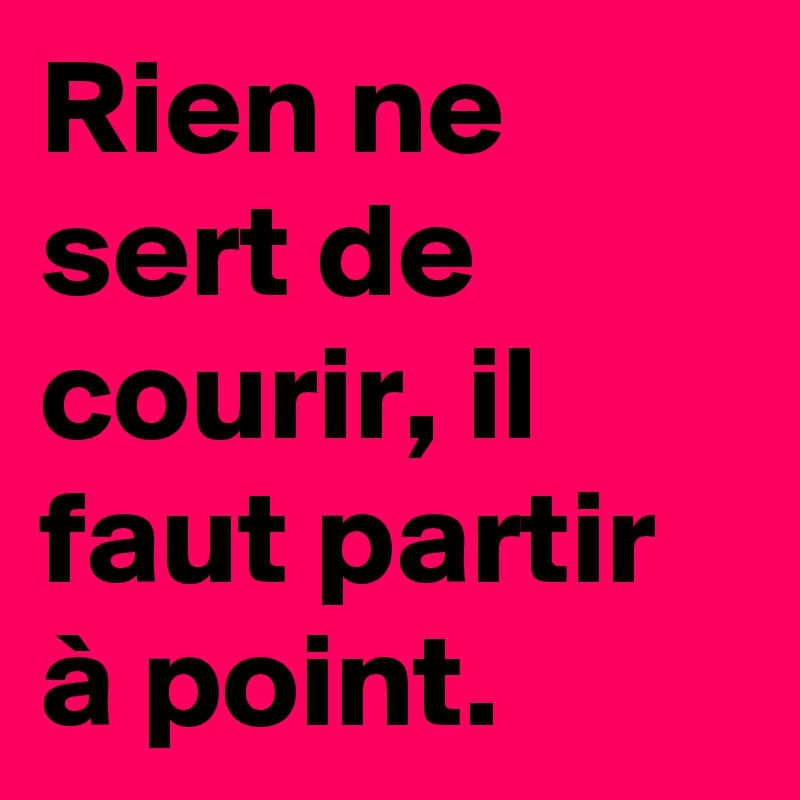
Comment rendre un message explicite dans une œuvre ?
A l’écrit : en écrivant directement la morale.
Comment se construit une fable avec morale ?
• 1) Créer une situation qui va servir d’exemple (le lion méprise le rat, le lion se retrouve dans un filet et ne peut en sortir que grâce à l’aide du rat).
• 2) En conclusion : mettre une morale qui permet de faire de l’exemple précédent une généralité :
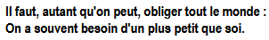
Exemple
Généralité
Sur la publicité : le slogan de la pub
Un message peut être explicite
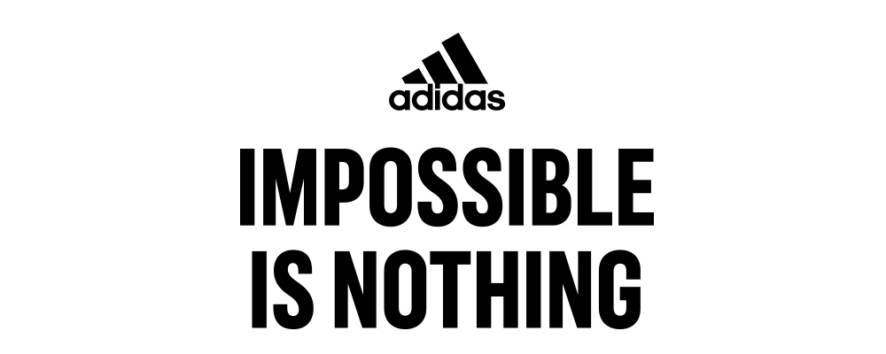
– Créer une situation qui va servir d’exemple (des femmes de toutes origines, de toutes religions, de toutes corpulences, cis ou trans, peuvent faire ce qu’elles veulent malgré les obstacles).
– En conclusion : une morale qui permet de faire de l’exemple précédent une généralité :
– (Conclusion implicite : achetez Adidas).
Comment se construit une pub ?
• Une pub suit exactement le même procédé qu’une fable avec morale.
• Elle est explicite car elle doit impacter un maximum de personnes.
D’abord, une définition
Diégèse.
• Diégèse (ou univers diégétique) : univers dans lequel évolue l’œuvre.
• Univers extra-diégétique : l’univers du public.
• Autre synonyme : le lore.
D’abord, une définition
• Diégèse (ou univers diégétique) : univers dans lequel évolue l’œuvre.
• Univers extra-diégétique : l’univers du public.
• Autre synonyme : le lore.
• Par exemple : une musique extra-diégétique dans un film est une musique entendu par le spectateur, mais qui n’est pas entendu par les personnages.
D’abord, une définition
Un message peut être explicite
Un message peut être explicite
• Définition : le quatrième mur.
• Au théâtre, le quatrième mur désigne un « mur » imaginaire situé sur le devant de la scène, séparant la scène des spectateurs et « au travers » duquel ceux-ci voient les acteurs jouer. (Source : Wikipédia)
• Le quatrième mur s’appliquer à toutes les œuvres de narration.
• Il y a plusieurs manières de briser ce quatrième mur, c’est-à-dire de s’adresser directement au public.
Un message peut être explicite
• Manière explicite : le personnage s’adresse directement à la caméra (donc au public) :
– Dans ce cas, le personnage a conscience de l’univers extradiégétique (personnage méta).
Un message peut être explicite
• Manière explicite : le personnage s’adresse directement à la caméra (donc au public) :
– Dans ce cas, le personnage a conscience de l’univers extradiégétique (personnage méta).
• Dans un livre, le narrateur (celui qui raconte l’histoire) s’adresse directement au lecteur (où le lecteur est le « narrataire »). Si le narrateur est aussi le personnage principal, ce dernier a aussi conscience de l’univers extradiégétique.
Un message peut être implicite
• Comment faire référence à l’univers extradiégétique (le nôtre) SANS que les personnages aient conscience de cet univers ?
• En faisant des parallèles avec notre monde et des références qui ne sont pas comprise des personnages mais accessibles aux lecteurs.
– Exemple : toutes les références à la pop culture actuelle sans qu’elles soient présente dans le lore.
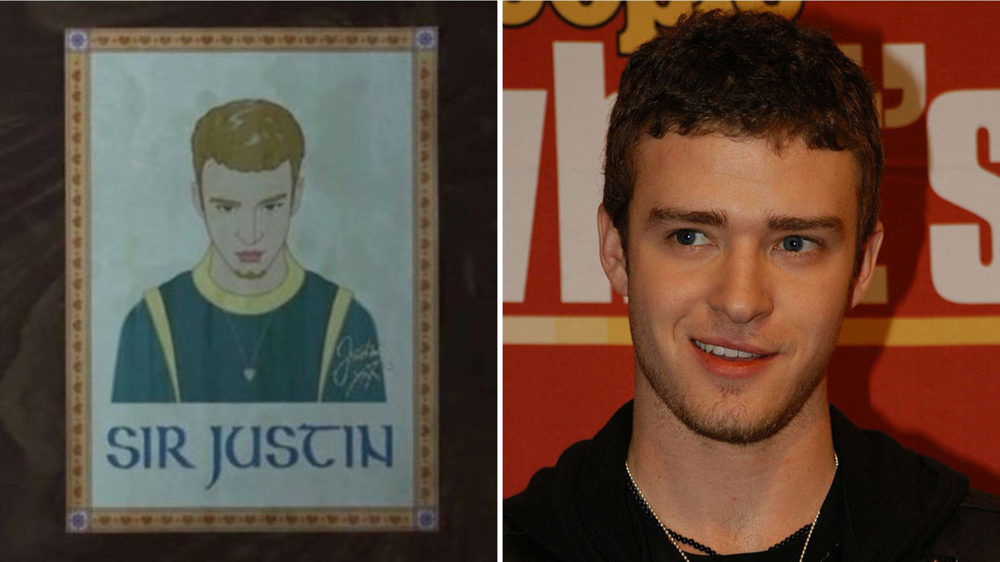
Un message peut être implicite
Un message peut être implicite
• En mettant une situation particulière dans l’histoire qui fera écho à notre propre monde.
• En changeant certains archétypes des histoires pour interpeler (ou pas) le lecteur.
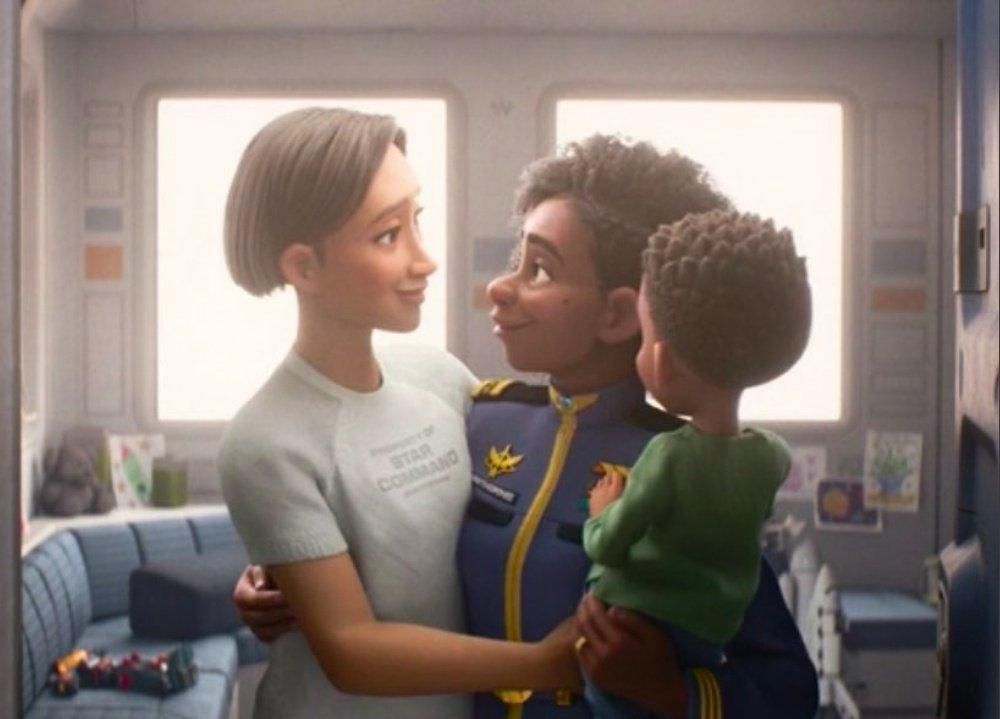
Un message peut être implicite
• Encore une fois, les raisons de cette référence explicite à notre monde peuvent être multiples :
– Humour (Shrek 2).
– Politique (District 9)
– Ecologique (Wall-E).
– Social (Buzz l’Eclair /Ariel)
Un message peut être implicite
• Encore une fois, les raisons de cette référence explicite à notre monde peuvent être multiples :
– Humour (Shrek 2).
– Politique (District 9)
– Ecologique (Wall-E).
– Social (Buzz l’Eclair /Ariel)
• Ce message peut être au centre de l’histoire (Wall-E), ou un simple clin d’œil (Sir Justin dans Shrek 2).
Un message peut être implicite
• Encore une fois, les raisons de cette référence explicite à notre monde peuvent être multiples :
– Humour (Shrek 2).
– Politique (District 9)
– Ecologique (Wall-E).
– Social (Buzz l’Eclair /Ariel)
• Ce message peut être au centre de l’histoire (Wall-E), ou un simple clin d’œil (Sir Justin dans Shrek 2).
• Ces références « extradiégétiques » partent du principe que le public possède ces références.
Un message peut être implicite
• Encore une fois, les raisons de cette référence explicite à notre monde peuvent être multiples :
– Humour (Shrek 2).
– Politique (District 9)
– Ecologique (Wall-E).
– Social (Buzz l’Eclair /Ariel)
• Ce message peut être au centre de l’histoire (Wall-E), ou un simple clin d’œil (Sir Justin dans Shrek 2).
• Ces références « extradiégétiques » partent du principe que le public possède ces références.
• Si VOUS voulez faire une telle référence, il faut voir si elles sont compréhensibles par votre audience.
Attention
• Il n’est pas toujours facile de déterminer l’intentionnalité d’un message.
• Un auteur homosexuel peut trouver normal de mettre en scène un couple homosexuel dans son histoire. Certains spectateurs pourraient interpréter cela comme de la « propagande LGBT+ ».
Explicite, implicite ou les deux ?
Explicite
Implicite
Explicite, implicite ou les deux ?
Explicite
Implicite
Briser le quatrième
Mur
Explicite, implicite ou les deux ?
Explicite
Implicite
Briser le quatrième
Mur
Elément central de l’histoire
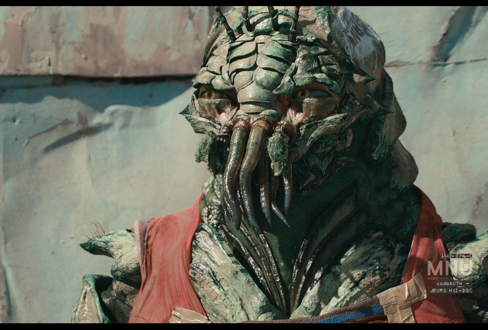
Explicite, implicite ou les deux ?
Explicite
Implicite
Briser le quatrième
Mur
Elément central de l’histoire
Jugement moral d’une situation
Simple élément de fond
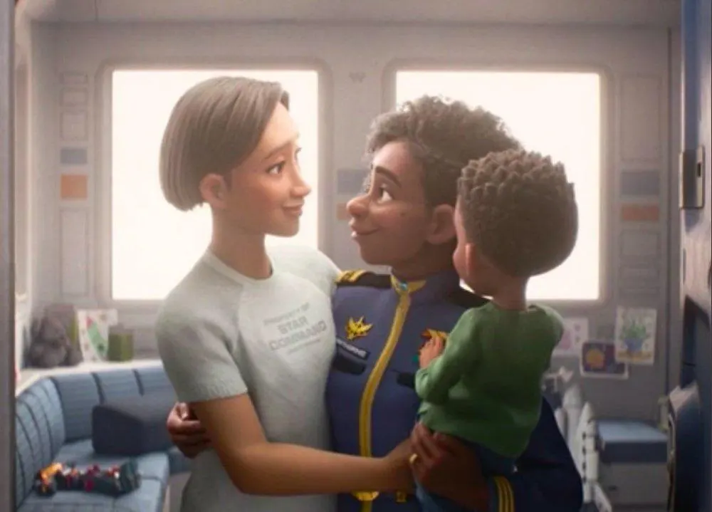
Comment choisir de mettre un message explicite ou implicite ?
• Beaucoup de facteurs :
– Intentionnalité (l’importance que l’on attribue au message).
– Objectif de la création (pub =/= film)
– Choix politique (Disney).
– Stratégie pour éviter la censure.
Faire coïncider les valeurs diégétiques et les valeurs extra-diégétiques.
Les valeurs diégétiques.
• Dans l’univers le fiction, qu’il s’agisse d’un film ou d’une publicité, un certain ordre moral doit être (généralement) mis en place.
• Justice (biais du « monde juste ») :
– Le méchant est puni et le gentil est récompensé.
– Un certain « ordre naturel » est respecté (au sens propre/figuré).
• Ces normes dépendent de l’époque et s’adaptent à la société (ou la précède).
– Exemple : une recherche de représentativité.
– Le respect de la nature.
Les valeurs extra-diégétiques dans la publicité.
A vous !
Projet
• Je vais vous répartir par groupe de 3. Votre objectif :
• Définissez le storytelling d’une marque, de son créateur, et de son prochain produit.
– Créateur : jouez sur le storytelling « parcours ».
– Marque : jouez sur les symboles ET sur le parcours.
– Prochain produit : en raccord avec l’histoire que vous voulez raconter.
– Au choix :
– confectionnez le design de ce prochain produit.
– Confectionnez le script de la publicité visuelle de ce prochain produit.
– Ecrivez un publi-reportage à son propos.
– Trois documents à produire : L’histoire du créateur. L’histoire de la marque. Le produit à venir.
– A la prochaine séance, vous devrez présenter à la classe pas uniquement vos productions, mais votre réflexion ET votre stratégie pour aboutir à cette production.
• Première étape : trouver la boîte et le créateur/créatrice que vous allez utiliser.
• Lire attentivement les informations factuelles (voir les debunks) autour de l’histoire de la boîte et du créateur.
• Repérer les faiblesses des histoires et les points utilisables dans le storytelling.
• Créer le produit suivant qui sera en raccord avec l’image que vous voulez donner de la boîte.
Challenge : prenez une marque qui a une réputation particulièrement mauvaise (Mc Donald, Monsanto), et tentez de redorer son image !
Vous pouvez être parfaitement cynique ou tenter de faire positivement évoluer les choses.
Conseils de gestion du temps
• 15/20 minutes : sélection de la marque (une marque différente par groupe).
• 40 minutes : lecture des informations sur la marque, les produits, le créateur. Evitez d’avoir Wikipédia pour unique source : les pages sont parfois faites par les entreprises elles-mêmes.
• 15 minutes : réflexion du message que l’on souhaite transmettre avec nos créations.
• 30 minutes : élaboration de la méthode pour transmettre ce message (quel arc narratif nous allons utiliser ? Quel symbole nous allons détourner).
• A LA FIN DE CETTE SEANCE : le brouillon de vos trois projets doit être établi.
• Conseil : une personne du groupe s’occupe du fondateur, une personne s’occupe de la marque, une personne s’occupe du produit.
Le locus de contrôle interne et le locus de contrôle externe.
• Ce qui provoque la faillite / l’échec : locus externe (moins culpabilisant / renforce le concept d’Underdog).
• Ce qui permet le succès : locus interne (même s’il s’agit d’un gros mensonge).
• Oubliez le facteur « chance » (pourtant prépondérant dans TOUTE histoire de succès.
L’underdog
Participant à un concours qu’on ne s’attend pas à voir gagner (syn.: outsider). Ici : personnage qui n’est pas censé réussir.
Variante 1 : la personne qui part défavorisée (naissance pauvre, handicap, issu de minorité, retard).
Usage en storytelling :
Prétendre à une enfance pauvre (réelle ou fantasmée) ou modeste.
Intérêts :
Susciter l’empathie et l’admiration.
Faire un contraste avec la situation finale.
Activer le mythe du selfmade man.
Méritocratie.
L’underdog
Participant à un concours qu’on ne s’attend pas à voir gagner (syn.: outsider). Ici : personnage qui n’est pas censé réussir.
Variante 2 : l’individu seul contre tous. Le petit contre les grands. David contre Golliath.
La variante 1 concerne l’origine de la personne, la variante 2 concerne son parcours.
Cette opposition du « système » peut être normale, ou organisée
Usage en storytelling :
Prétendre que le monde entier est contre nous.
Justifier une mise au ban (on me critique car j’ose dire la vérité).
Intérêts :
Susciter l’empathie et le soutien.
Rendre la victoire encore plus éclatante.
Offrir un sentiment de rébellion (contre le système).
Renforce le « locus interne de contrôle».
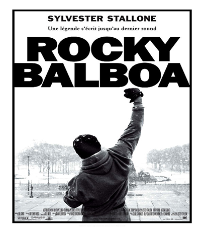
Après la séanceAfter the session
Le bilan, les jeux, et votre retourSummary, games, and your feedback
Scannez ce QR code : vous pourrez donner votre retour, revoir le bilan de la formation ou rejouer aux jeux.Scan this QR code: you can leave your feedback, review the session summary, or play the games again.
![QR code vers la page antoninatger.github.io/interventions/retours]() antoninatger.github.io/interventions/retours →antoninatger.github.io/interventions/retours →
antoninatger.github.io/interventions/retours →antoninatger.github.io/interventions/retours →